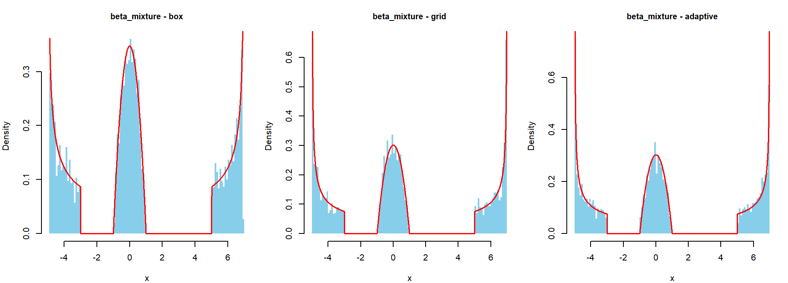
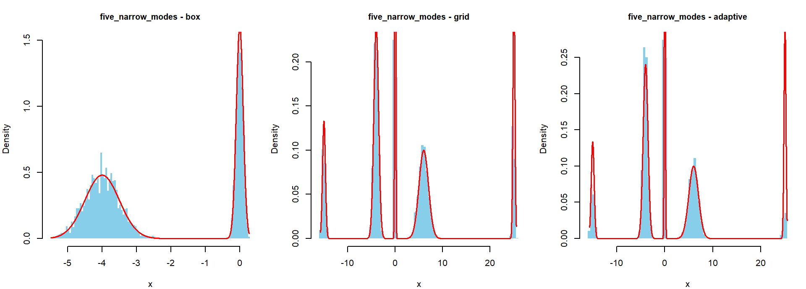
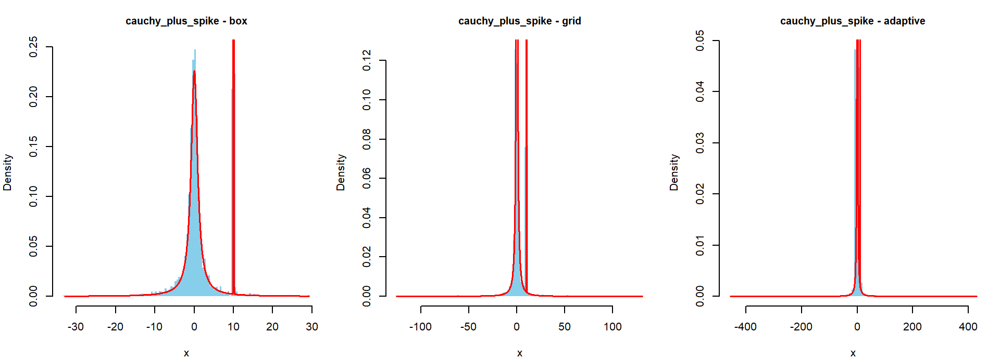
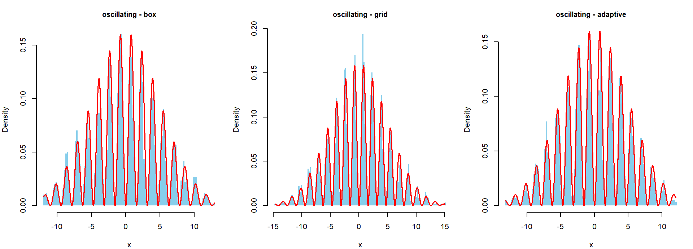
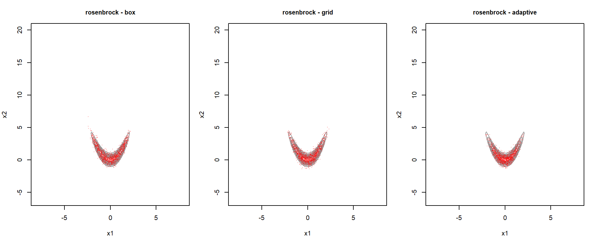
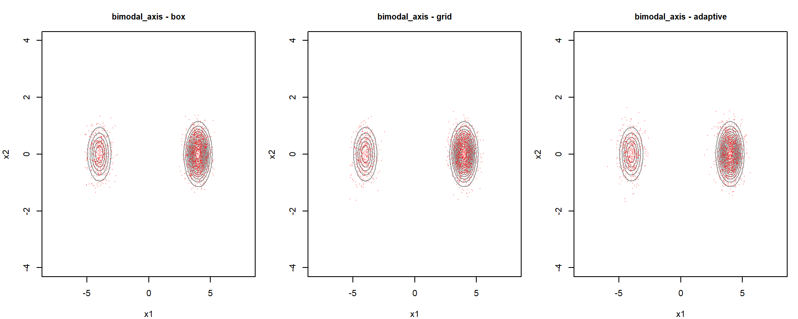
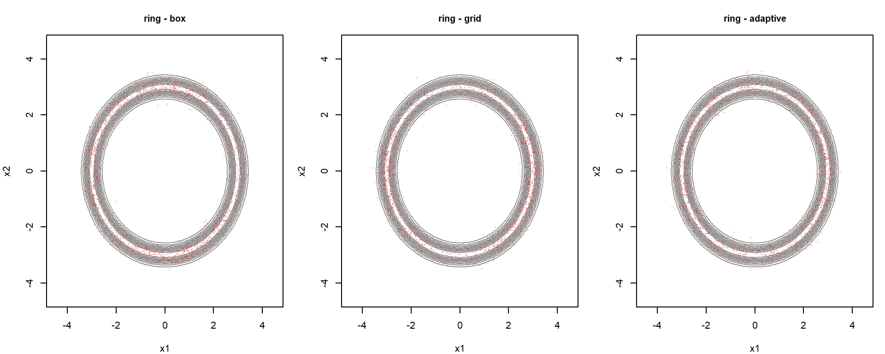
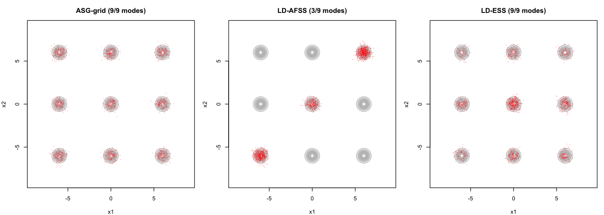
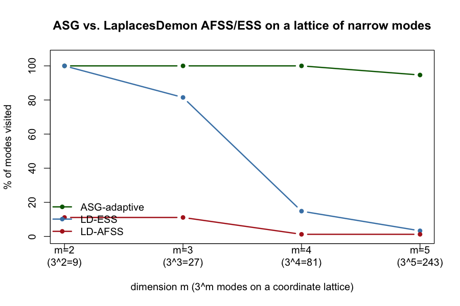

This repository extends the Automated Sliced Gibbs (ASG) sampler with three interchangeable strategies for computing the per-coordinate slice bracket, and stress-tests all three against nine challenging kernels (five univariate, four bivariate) with independently computed ground truth.
asg_sampler.R — the ASG sampler (Gibbs sweep +
fixed-u 1-D slice step), extended with a
bracket argumenteffective_support_uni_s.R — the paper’s
Cauchy-transform effective-support routine (the "box"
bracket)level_set_endpoints.R — adaptive directional-stepping
search for the outermost level-set end points (the
"adaptive" bracket)test_complicated_kernels.R /
test_complicated_kernels.Rmd — the stress test suite and
report generatorASG targets an unnormalized kernel \(K:\mathbb{R}^m\to[0,\infty)\) with
\[ Z=\int_{\mathbb{R}^m}K(x)\,dx<\infty,\qquad p(x)=\frac{K(x)}{Z}. \]
It augments the state with a slice variable \(u\) so that
\[ H(u,x_1,\dots,x_m)=\frac{\mathbb{I}\{K(x_1,\dots,x_m)>u\}}{Z}, \]
and alternates:
\[ u^{(t)}\sim\mathrm{Unif}\bigl(0,K(x^{(t-1)})\bigr),\qquad x_k^{(t)}\sim\mathrm{Unif}\bigl(S_k(u^{(t)})\bigr),\;\; k=1,\dots,m, \]
where \(S_k(u)=\{z\in\mathbb{R}:K(x_1,\dots,x_{k-1},z,x_{k+1},\dots,x_m)>u\}\) is the \(k\)-th conditional slice. The one-dimensional problem every coordinate update reduces to is: draw uniformly from \(S_u=\{z:g(z)>u\}\) for a generic univariate kernel \(g\).
All three strategies compute an interval \([a,b]\) and then draw by rejection: propose \(z\sim\mathrm{Unif}(a,b)\), accept if \(g(z)>u\).
box (Cauchy-transform effective
support, the paper’s main method). Transform to the Cauchy scale \(v=F_C(x)\), compute \(K^\star(v)=K(Q_C(v))/f_C(Q_C(v))\), and
find the equal-tailed interval carrying mass \(1-\varepsilon\):
\[ [a,b]:\quad \int_{-\infty}^{a}K(x)\,dx\le\frac{\varepsilon}{2}Z,\qquad \int_{b}^{\infty}K(x)\,dx\le\frac{\varepsilon}{2}Z. \]
This interval is chosen by probability mass, not by the level set, so it need not contain \(S_u\).
grid (extreme-roots bracket). Scan a
fixed grid on the Cauchy scale for the outermost points where \(K\) crosses \(u\), then bisect to the tolerance \(e\). Returns the outside end of
each root bracket, so (subject to a grid-resolution assumption) \(S_u\subseteq[a,b]\).
adaptive (directional stepping).
Starting from the domain edges, step inward with a secant-type adaptive
step size — a large step while \(g\) is
falling or flat, a smaller step (\(\times
0.5\) of the estimated distance to \(u\)) while \(g\) is climbing toward \(u\) — until the slice is bracketed, then
bisect. Faster than a fixed grid scan but can step over a slice
component narrower than the step size.
Because \([a,b]\) need not contain \(S_u\), the implementation uses a retain rule: if the current coordinate value \(x_k\notin[a,b]\) (or the rejection step exhausts its try budget), the coordinate is left unchanged instead of being overwritten. For any interval \([a,b]\) not depending on \(x_k\), this update leaves \(\mathrm{Unif}(S_u)\) exactly invariant — the retain event occurs with probability \(\varepsilon/m\) under the equal-tailed tolerance \(\varepsilon/m\) used per coordinate, independent of whether \(S_u\subseteq[a,b]\).
| Kernel | Definition | What it stresses |
|---|---|---|
beta_mixture |
\(K(x)=\tfrac{0.3}{2}\mathrm{Beta}\!\left(\tfrac{x+5}{2};0.5,1\right)+\tfrac{0.4}{2}\mathrm{Beta}\!\left(\tfrac{x+1}{2};2,2\right)+\tfrac{0.3}{2}\mathrm{Beta}\!\left(\tfrac{x-5}{2};1,0.5\right)\) | unbounded spikes at the mixture edges, gaps between components |
five_narrow_modes |
\(K(x)=\sum_{j=1}^{5}w_j\,\phi(x;\mu_j,\sigma_j)\), \((w,\mu,\sigma)\): \((.10,\!-15,.3),(.30,\!-4,.5),(.20,0,.1),(.25,6,1),(.15,25,.2)\) | very unequal weights spread over a \([-15,25]\) range |
cauchy_plus_spike |
\(K(x)=0.7\,\mathrm{Cauchy}(x;0,1)+0.3\,\phi(x;10,0.05)\) | heavy tails plus a spike \(0.05\) wide, \(10\) units from the bulk |
oscillating |
\(K(x)=e^{-x^2/50}\sin^2(2x)\) | dozens of thin modes separated by exact zeros |
| Kernel | Definition | What it stresses |
|---|---|---|
rosenbrock |
\(K(x_1,x_2)=\exp\!\left(-\tfrac{x_1^2}{10}-\tfrac{x_2^2}{10}-2(x_2-x_1^2)^2\right)\) | curved, banana-shaped ridge (paper’s own benchmark) |
bimodal_axis |
\(K(x)=0.3\,\phi_2(x;(-4,0),0.5^2 I)+0.7\,\phi_2(x;(4,0),0.5^2 I)\) | two well-separated, unequally weighted modes on an axis |
bimodal_diagonal |
\(K(x)=0.5\,\phi_2(x;(-3,-3),0.7^2 I)+0.5\,\phi_2(x;(3,3),0.7^2 I)\) | modes on a diagonal — the hard case for any coordinate-wise sampler |
ring |
\(K(x)=\exp\!\left(-\dfrac{(\lVert x\rVert-3)^2}{2\cdot 0.2^2}\right)\) | thin annulus; every conditional slice has two disconnected pieces |
Ground truth for the univariate kernels is the exact CDF (or a
numerical CDF for oscillating); for the bivariate kernels
it is a \(1201\times1201\) grid
integration.
3000 retained 1-D samples / 1500 retained 2-D samples, 300 burn-in,
one run per kernel \(\times\) bracket.
KS is the Kolmogorov–Smirnov statistic against the true CDF
(univariate only). max_weight_err is the largest error in
mode/region probability. retain is the empirical
retain-rule activation rate.
| kernel | dim | bracket | KS | max_weight_err | ESS | time (s) | ESS/s | retain |
|---|---|---|---|---|---|---|---|---|
| beta_mixture | 1 | box | 0.071 | 0.058 | 3000 | 0.2 | 17126.8 | 0.0000 |
| beta_mixture | 1 | grid | 0.010 | 0.005 | 1496 | 2.5 | 600.7 | 0.0379 |
| beta_mixture | 1 | adaptive | 0.015 | 0.005 | 1896 | 3.2 | 584.3 | 0.0000 |
| five_narrow_modes | 1 | box | 0.400 | 0.313 | 1213 | 0.3 | 4658.3 | 0.0000 |
| five_narrow_modes | 1 | grid | 0.055 | 0.039 | 234 | 4.1 | 57.6 | 0.1194 |
| five_narrow_modes | 1 | adaptive | 0.119 | 0.115 | 2522 | 5.2 | 485.4 | 0.0000 |
| cauchy_plus_spike | 1 | box | 0.097 | 0.096 | 763 | 1.4 | 540.1 | 0.0000 |
| cauchy_plus_spike | 1 | grid | 0.020 | 0.002 | 2291 | 3.5 | 660.9 | 0.1373 |
| cauchy_plus_spike | 1 | adaptive | 0.270 | 0.270 | 13629 | 3.7 | 3726.1 | 0.0000 |
| oscillating | 1 | box | 0.021 | 0.003 | 3000 | 0.1 | 39110.4 | 0.0000 |
| oscillating | 1 | grid | 0.025 | 0.005 | 3000 | 0.8 | 3586.6 | 0.0006 |
| oscillating | 1 | adaptive | 0.022 | 0.019 | 3666 | 1.2 | 3186.0 | 0.0000 |
| rosenbrock | 2 | box | — | 0.012 | 81 | 25.9 | 3.1 | 0.0086 |
| rosenbrock | 2 | grid | — | 0.009 | 124 | 3.8 | 32.6 | 0.0000 |
| rosenbrock | 2 | adaptive | — | 0.004 | 175 | 5.1 | 34.0 | 0.0000 |
| bimodal_axis | 2 | box | — | 0.008 | 948 | 35.4 | 26.8 | 0.0000 |
| bimodal_axis | 2 | grid | — | 0.020 | 1100 | 3.3 | 333.6 | 0.0000 |
| bimodal_axis | 2 | adaptive | — | 0.013 | 1111 | 4.2 | 261.6 | 0.0000 |
| bimodal_diagonal | 2 | box | — | 0.500 | 1500 | 27.1 | 55.3 | 0.0000 |
| bimodal_diagonal | 2 | grid | — | 0.500 | 1129 | 6.2 | 180.8 | 0.0000 |
| bimodal_diagonal | 2 | adaptive | — | 0.500 | 1382 | 8.0 | 172.0 | 0.0000 |
| ring | 2 | box | — | 0.032 | 201 | 46.4 | 4.3 | 0.1714 |
| ring | 2 | grid | — | 0.015 | 1500 | 2.0 | 747.4 | 0.0000 |
| ring | 2 | adaptive | — | 0.004 | 1300 | 2.7 | 484.5 | 0.0000 |
box is fast but can miss narrow/separated
mass. On five_narrow_modes (KS \(=0.400\)) it under-samples the two most
extreme, most isolated components — the Cauchy-scale mass calculation
doesn’t resolve them. It is otherwise the cheapest bracket by a wide
margin (no per-draw root-finding), which shows up directly in ESS/s on
the easy kernels.grid is the most reliably accurate, at
a real cost: 5–30\(\times\) slower than
the other two, especially on the 2-D kernels where the box is recomputed
every coordinate, every sweep.adaptive trades accuracy for speed
non-uniformly. It matches or beats grid on most
kernels, but is worst-in-class on cauchy_plus_spike (KS
\(=0.270\)): a spike \(0.05\) wide on the Cauchy scale can be
stepped over by the directional search. max_step may need
to shrink further for very narrow, distant spikes (see
level_set_endpoints.R for the current default and how to
change it).bimodal_diagonal fails for every
bracket (max_weight_err \(\approx0.5\), i.e. essentially 50/50
instead of the true split). This is not a bracket bug — it is the
structural limitation of any coordinate-wise Gibbs update: reaching a
diagonal mode from the other requires passing through a near-zero saddle
in both coordinates at once.retain (the retain-rule activation
rate) is near zero everywhere except grid and
box on a handful of kernels with tight tolerances,
consistent with the theoretical rate \(\varepsilon/m\).Each figure overlays the true density (red) on the ASG sample histogram (blue), or the true kernel’s contour (grey) with ASG samples (red dots), for all three brackets side by side.
Beta mixture — unbounded spikes, gaps in the support

Five narrow modes — unequal weights across a wide range

Cauchy + spike — heavy tails plus a distant, very narrow mode

Oscillating — Gaussian envelope \(\times\sin^2\), many thin modes

Rosenbrock — curved, banana-shaped ridge

Bimodal (axis-aligned) — two unequal, well-separated modes

Ring — thin annulus, disconnected conditional slices

install.packages(c("coda")) # only extra dependency beyond base R
source("effective_support_uni_s.R")
source("level_set_endpoints.R")
source("asg_sample bracket.R")
# quick run
N1=500 N2=300 BURN=100 Rscript test_complicated_kernels.R
# full run (defaults: N1=3000, N2=1500, BURN=300)
Rscript test_complicated_kernels.Ror knit the report directly:
rmarkdown::render("test_complicated_kernels.Rmd")Both produce asg_test_results.csv and either
asg_test_plots.pdf (script) or an inline HTML report (Rmd)
with the same table and figures as above.
fit <- dim1_gibbs_sample_ASG(ker, n_samples = 2000, burn_in = 200,
theta_init = 0, bracket = "adaptive")
fit <- multivariate_gibbs_sample_ASG(ker, n_samples = 2000, burn_in = 200,
theta_init = c(0, 0), bracket = "grid")bracket is one of "box" (default),
"grid", or "adaptive".
check_bracket = TRUE/FALSE is kept for backward
compatibility and maps to "grid"/"box".
This note documents two experiments comparing our Automated Sliced
Gibbs (ASG) sampler against two established alternatives — the
Automated Factor Slice Sampler (AFSS) and
Elliptical Slice Sampling (ESS) — both run via their
reference implementations in the LaplacesDemon R package,
not reimplemented by hand. Both experiments target a lattice of
narrow, well-separated Gaussian modes, which turns out to be
exactly the shape of target that separates the three methods
cleanly.
All numbers below are taken directly from the two knitted R Markdown
reports (comparison-asg-afss-ess.html, the dimension sweep;
and comparison-asg-afss-ess-grid-based.html, the 2-D grid)
and their attached figures — nothing here is hand-typed apart from
labels.
All three target an unnormalized kernel \(K:\mathbb{R}^m\to[0,\infty)\), \(p(x)=K(x)/Z\).
Coordinate-wise Gibbs with a shared slice variable: draw \(u\sim\mathrm{Unif}(0,K(x))\), then for \(k=1,\dots,m\) draw
\[ x_k\sim\mathrm{Unif}\bigl(S_k(u)\bigr),\qquad S_k(u)=\{z\in\mathbb{R}:K(x_1,\dots,x_{k-1},z,x_{k+1},\dots,x_m)>u\}. \]
Every update touches exactly one coordinate, holding the rest fixed.
Introduces an auxiliary \(\nu\sim N(0,\Sigma_{\text{aux}})\) and moves along a full ellipse through the current point:
\[ x(\theta)=x\cos\theta+\nu\sin\theta,\qquad \theta\in[0,2\pi). \]
Because \(N(x;0,\Sigma_{\text{aux}})\cdot\bigl[K(x)/N(x;0,\Sigma_{\text{aux}})\bigr]=K(x)\) identically, this is exact for any \(\Sigma_{\text{aux}}\succ0\) — the proposal is a joint move across all \(m\) coordinates at once.
Estimates the target’s covariance \(\hat\Sigma\) (re-estimated periodically via eigendecomposition during an adaptive phase), then slice-samples along each eigenvector \(e_k\) of \(\hat\Sigma\) in turn using Neal’s (2003) stepping-out + shrinkage 1-D slice sampler:
\[ x\leftarrow x+s\,e_k,\qquad s\sim\text{(univariate slice along } e_k\text{)}. \]
Like ESS, each sweep is a small number of fixed, data-driven linear directions — not the coordinate axes, unless the estimated \(\hat\Sigma\) happens to be (close to) diagonal.
Kernel: nine narrow, equally-weighted Gaussian bumps at every combination of \(\{-6,0,6\}\times\{-6,0,6\}\):
\[ K(x_1,x_2)=\sum_{(c_1,c_2)\,\in\,\{-6,0,6\}^2} \exp\!\left(-\frac{(x_1-c_1)^2+(x_2-c_2)^2}{2\sigma^2}\right), \qquad \sigma=0.4. \]
The population covariance of this target is exactly diagonal — \(X_1\) and \(X_2\) are independent, uniform over \(\{-6,0,6\}\) — so the “correct” AFSS factor directions, in principle, are just the coordinate axes.
Settings: \(N=1500\) retained samples, \(300\) burn-in,
theta_init = c(6,6) (a mode). ESS given
Covar = diag(2)*36 (matched to the true 6-unit spacing).
AFSS given the tutorial’s own defaults.
| method | modes visited |
|---|---|
| ASG-box | 9 / 9 |
| ASG-grid | 9 / 9 |
| ASG-adaptive | 9 / 9 |
| LD-ESS | 9 / 9 |
| LD-AFSS | 3 / 9 (one run’s console log) — 6 / 9 in the attached figure (a separately executed run) |

At this dimension, ESS is not yet a problem — its fresh, randomly oriented ellipse each iteration is enough to occasionally land near any of the 9 bumps, wherever the current point is. AFSS is already unreliable: its two (adapted, not necessarily axis-aligned) factor directions connect only whichever subset of modes happens to lie along them, and that subset — 3 modes in the console run, 6 in the plotted run — changes from run to run. ASG, sweeping the literal coordinate axes every time, reaches all 9 modes in every run.
Kernel: the natural generalization to \(m\) dimensions — \(3^m\) narrow modes at every point of \(\{-6,0,6\}^m\):
\[ K(x)=\sum_{c\,\in\,\{-6,0,6\}^m}\exp\!\left(-\frac{\lVert x-c\rVert^2}{2\sigma^2}\right), \qquad \sigma=0.4. \]
Settings: \(N=800\), burn-in \(200\),
theta_init = rep(0.01, m), ESS given
Covar = diag(m)*36, AFSS given the same defaults as above,
for \(m=2,3,4,5\) (i.e. \(9,27,81,243\) modes).
| \(m\) | modes | ASG-adaptive | LD-AFSS | LD-ESS |
|---|---|---|---|---|
| 2 | 9 | 100.0% | 11.1% | 100.0% |
| 3 | 27 | 100.0% | 3.7% | 74.1% |
| 4 | 81 | 100.0% | 1.2% | 16.0% |
| 5 | 243 | 94.2% | 3.7% | 4.1% |

At \(m=5\), ASG visits 229 of 243 modes; AFSS and ESS visit roughly 9 and 10 respectively — both essentially stuck near their starting point.
Reported by mcmcse::multiESS() on the \(m=5\) chains (800 retained draws each):
| method | multiESS (out of 800) |
|---|---|
| ASG-adaptive | 800.0 |
| LD-AFSS | 274.7 |
| LD-ESS | 131.1 |
Even setting aside how many distinct modes each chain found, the ASG chain is also the least autocorrelated of the three — consistent with a chain that is actually mixing, rather than one that is mostly revisiting the same small neighborhood.
ASG’s per-coordinate update is a genuinely 1-D search: to move from one lattice point to any other, it needs at most \(m\) coordinate updates, each just deciding which of 3 narrow slice pieces (along that one axis) to land in. The cost of navigating the lattice scales linearly in \(m\).
ESS and AFSS instead propose joint moves: a random rotation through all \(m\) coordinates at once (ESS), or a fixed small set of linear combinations of them (AFSS). For either to relocate the chain to a specific one of \(3^m\) narrow modes, the proposal has to land within \(\sim\sigma\) of that mode in every coordinate simultaneously. The probability of that happening by chance for a randomly oriented or fixed-direction proposal shrinks multiplicatively with \(m\) — informally, something like \((\sigma/L)^{m}\) for a proposal spread of scale \(L\), i.e. exponential decay in \(m\) — which is exactly the pattern in the table above: near-100% at \(m=2\), collapsing by \(m=5\).
This is not a criticism of ESS or AFSS in general — both are designed
for, and excel at, targets with smooth, roughly-elliptical or
low-dimensional correlated structure, where their joint moves are a
major advantage over coordinate-wise updates (see, e.g., the earlier
bimodal_diagonal experiment in this repo, where both beat
every ASG bracket badly). The lattice-of-modes kernel here is close to a
worst case for them precisely because it has no such joint
structure to exploit — it is exactly and only a per-coordinate
multiple-choice problem, which is ASG’s native format.
library(LaplacesDemon)
library(mcmcse)
source("effective_support_uni_s.R")
source("level_set_endpoints.R")
source("asg_sample bracket.R")
set.seed(2026)
vals <- c(-6, 0, 6); sigma <- 0.4
m <- 5
centers <- as.matrix(do.call(expand.grid, rep(list(vals), m)))
K <- function(x) sum(exp(-rowSums((matrix(x, nrow(centers), m, byrow=TRUE) - centers)^2)/(2*sigma^2)))
# ASG
fit <- multivariate_gibbs_sample_ASG(K, n_samples = 800, burn_in = 200,
theta_init = rep(0.01, m), bracket = "adaptive")
# LaplacesDemon AFSS / ESS
Model <- function(parm, Data) {
LP <- log(K(parm)); if (!is.finite(LP)) LP <- -1e10
list(LP = LP, Dev = -2*LP, Monitor = LP, yhat = parm, parm = parm)
}
MyData <- list(mon.names = "LP", parm.names = paste0("x", 1:m))
fit_afss <- LaplacesDemon(Model, Data = MyData, Initial.Values = rep(0.01, m),
Covar = NULL, Iterations = 1000, Thinning = 1,
Algorithm = "AFSS", Specs = list(A = 200, B = NULL, m = 100, n = 0, w = 1))
fit_ess <- LaplacesDemon(Model, Data = MyData, Initial.Values = rep(0.01, m),
Covar = diag(m)*36, Iterations = 1000, Thinning = 1,
Algorithm = "ESS", Specs = list(B = NULL))The full sweep across \(m=2..5\),
with the “modes visited” bookkeeping and the plot, is in
dim_sweep_and_plot.R.
bimodal_diagonal results elsewhere in this
repo for the reverse case.ASG-box is slow here (the
effective-support box is recomputed every coordinate, every sweep) —
grid and adaptive are the brackets to use for
anything beyond a quick check..
├── asg_sampler.R # ASG sampler, all three brackets
├── effective_support_uni_s.R # Cauchy-transform effective support ("box")
├── level_set_endpoints.R # adaptive level-set search ("adaptive")
├── test_complicated_kernels.R # stress-test script
├── test_complicated_kernels.Rmd # stress-test report (this README's source)
├── asg_test_results.csv # generated results table
└── figures/ # generated plots (this README's figures)
├── adaptive gibbs.R # Adaptive gibbs, HMC, Elliptical Slice and other sampler comparison.
├── Other R codes # Examples and Simulation studies